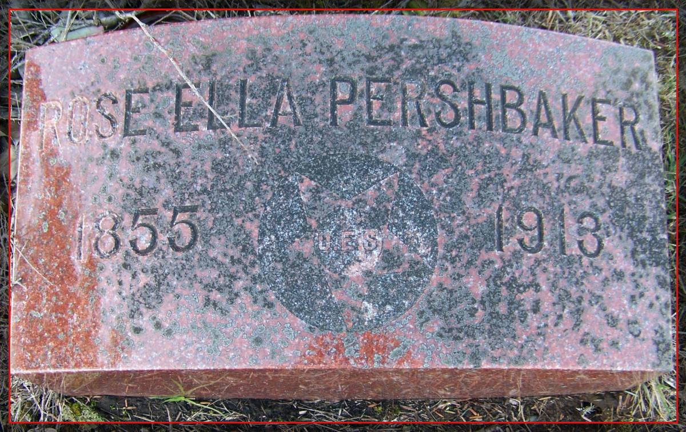

Rosella Dame d. 1913
3× great-grandmother of Genevieve Elisa Symanski Nelson, wife of Peter.
Rosella Dame. She died on 20 Nov 1913 in California, United States1 and was buried at Oregon, United States2.
Family
- Partner
- Adam Pershbaker 1838–1917
- Children
- Ruby Pershbaker d. 1973 documented
Life events
| Event | Date | Place and details |
|---|---|---|
| Buried | Nov 1913 | Oregon, United States2 |
| Died | 20 Nov 1913 | California, United States1 |
Records


Sources
- Death Notice: Pershbaker — Rose E., San Francisco Chronicle (San Francisco, California), 22 November 1913, p. 19.
PERSEBASETR—In Oakland. November 20. Rop-e K. , beloved wife of Adam Pershbaker. mother of Mrs. c>. W. Kahy and Miss Ruby E. Persli- baker. aud sister of Mrs. Christa Carothers and Joseph Dame, a native of Ohio. (Coo* county. Or., pap-rs please copy.) Funeral and interment strictly private.
Translation: PERSHBAKER—In Oakland, November 20, Rose E., beloved wife of Adam Pershbaker, mother of Mrs. S. W. Fahy and Miss Ruby E. Pershbaker, and sister of Mrs. Christa Carothers and Joseph Dame, a native of Ohio. (Coos county, Or., papers please copy.) Funeral and interment strictly private.
Died 20 November 1913 in Oakland, Alameda County, California; native of Ohio; beloved wife of Adam Pershbaker; mother of Mrs. S. W. Fahy and Miss Ruby E. Pershbaker; sister of Mrs. Christa Carothers and Joseph Dame; funeral and interment strictly private (Coos County, Oregon papers requested to copy).
- Find a Grave Memorial #66658753: Rose Ella Dame Pershbaker (1855–1913), Memorial 66658753.
ROSE ELLA PERSHBAKER / 1855 - 1913 | Birth 1855 Ohio, USA | Death 20 Nov 1913 Alameda, Alameda County, California, USA | Burial: Knights of Pythias Cemetery, Bandon, Coos County, Oregon
Gravestone ("ROSE ELLA PERSHBAKER / 1855 [Order of the Eastern Star emblem] 1913") and transcribed obituary from the Semi-Weekly Bandon Recorder (25 Nov 1913) at Knights of Pythias Cemetery, Bandon, Coos County, Oregon: born 1855 in Ohio (daughter of Joseph Dame and Phebe Dame); came to Coos County c. 1872; married Adam Pershbaker c. 1876; died 20 November 1913 in the San Francisco Bay Area while living with her daughter Ruby Edith.